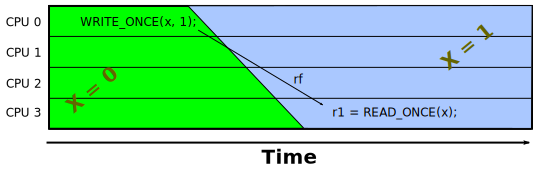
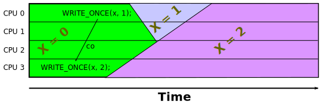
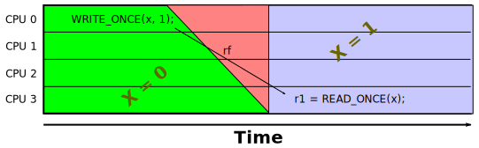

IntroductionThis document gives an example-driven intuitive introduction to the Linux kernel memory model. It is in no way a substitute for the mathematical model, in particular, these examples do not explore the many interesting corner cases of that model. However, these examples should prove useful for developers who would like to write good concurrent Linux-kernel code, but who don't mind giving up those last few percentage points of performance by staying a bit back from the edge of memory-model disaster. This article assumes that you understand some of the material in the A Formal Model of Linux-Kernel Memory Ordering article, particularly the section entitled Memory Models and The Role of Cycles. This article is organized as follows:
Communications RelationsBefore starting the examples, it is worthwhile reviewing the communications relations. These relations are as follows:
Each of these relations is described in more detail in one of the following sections. Reads-From (rf)Of these, the rf relation is the only one that implies a temporal constraint: In the absence of value-speculation optimizations, the read must have executed later than the write that supplied that read's value.Quick Quiz 1:
So what will you do if compilers or CPUs start using value-speculation
optimizations?
A key point is that writing to a variable cannot result in an instantaneously visible change in value, courtesy of the fact that the speed of light is finite and that atoms are non-zero in size. A change will instead propagate through the system, as fancifully depicted below, with time advancing from left to right:  Quick Quiz 2:
If it is not possible to make a change instantaneously visible,
then how do sequentially consistent systems work?
The upshot is that if a read from a shared variable returns the value stored by a write, then there will be an rf link from that write to that read, and we know that the read must have executed after the write did. Coherence (co)Unlike the rf relation, the co relation does not imply any sort of temporal constraint. In fact, it is possible for an earlier write to overwrite a later write, as shown below:  As can be seen in the figure, the write of the value 2 happened earlier in time, but it nevertheless overwrote the later write of the value 1, so that the co relation goes backwards in time. This outcome is due to the fact that the written values take time to propagate through the system, so that the system decides at some later time which of the two values wins. Quick Quiz 3:
Exactly how could the system “decide later” which write won?
Quick Quiz 4:
Wouldn't it be way simpler if the last write always won?
From-Read (fr)Like the co relation, the fr relation does not imply any sort of temporal constraint. Again, due to the finite speed with which information propagates through real systems, it is possible for a read to get a value from a write whose value is already destined to be overwritten, as shown below:
In this example, the read returned the initialization value of zero despite the write of the value 1 having already executed. However, this new value had not yet propagated from CPU 0 to CPU 3, so this later read, being unaware of the new value, returned the old one. The fr relation therefore goes backwards in time. Relation SummaryIn short, the rf relation implies a temporal constraint, while the co and fr relations do not. Therefore, as we will see in the remainder of this document, as a rough rule of thumb, the more rf links your code has, the less heavyweight ordering your code will need. This rule of thumb is illustrated by the examples in the remainder of this document. Ordering For FreeThis section describes types of ordering that are provided gratis by most CPUs, even the infamous DEC Alpha. But let's start with an example for which ordering is not guaranteed:
Example Litmus Test #1
Because there is no natural ordering nor any sort of ordering constraint on the CPU, the counter-intuitive outcome on the exists clause on the last line can happen. All that is needed is for the CPU to reorder the read and the write from any of the three processes. And the Linux-kernel memory model agrees with this assessment, as confirmed by the Sometimes 1 7: Outcome for Example Litmus Test #1 (strong model)1 Test C-LB+o-o+o-o+o-o Allowed 2 States 8 3 0:r1=0; 1:r1=0; 2:r1=0; 4 0:r1=0; 1:r1=0; 2:r1=1; 5 0:r1=0; 1:r1=1; 2:r1=0; 6 0:r1=0; 1:r1=1; 2:r1=1; 7 0:r1=1; 1:r1=0; 2:r1=0; 8 0:r1=1; 1:r1=0; 2:r1=1; 9 0:r1=1; 1:r1=1; 2:r1=0; 10 0:r1=1; 1:r1=1; 2:r1=1; 11 Ok 12 Witnesses 13 Positive: 1 Negative: 7 14 Condition exists (0:r1=1 /\ 1:r1=1 /\ 2:r1=1) 15 Observation C-LB+o-o+o-o+o-o Sometimes 1 7 16 Hash=63d9717e69db4ea05bb2e6840d1d22d4 Quick Quiz 5:
Only the CPU?
Can't the compiler also reorder the reads and writes in
Example Litmus Test #1?
The key point of this unordered example is that even if your litmus test has nothing but causal rf relations, it still needs at least some ordering to prohibit the counter-intuitive cyclic outcome. For example, if each process provides minimal ordering from its read to its write, then the cyclic outcome will be forbidden. For example, consider the following litmus test:
Example Litmus Test #2
In this litmus test, P0() has an address dependency between its read and write, P1() has a control dependency between its read and write, and P2() has a data dependency between its read and write. The initialization on lines 4-6 interacts with each process's code to set up for the dependency in the next process. Because there is an rf link between each adjacent pair of processes and because each process maintains ordering between its read and write, the counter-intuitive exists clause cannot happen, as confirmed by the strong model: Outcome for Example Litmus Test #2 (strong model)1 Test C-LB+ldref-o+o-ctrl-o+o-dep-o Allowed 2 States 2 3 0:r1=x0; 1:r1=0; 2:r1=y0; 4 0:r1=y0; 1:r1=0; 2:r1=y0; 5 No 6 Witnesses 7 Positive: 0 Negative: 2 8 Condition exists (0:r1=b /\ 1:r1=1 /\ 2:r1=b) 9 Observation C-LB+ldref-o+o-ctrl-o+o-dep-o Never 0 2 10 Hash=d8909b22b7196d3b91cd78e700c68cc6 Quick Quiz 6:
But wait!
DEC Alpha does not respect dependency ordering.
So wouldn't it fail to order P0() and P2() in
Example Litmus Test #2?
If any of the dependencies is removed, the cyclic outcome is allowed, as shown in the following litmus test, which eliminates P1()'s control dependency:
Example Litmus Test #3
The strong model confirms that the cycle is now allowed: Outcome for Example Litmus Test #3 (strong model)1 Test C-LB+ldref-o+o-o+o-dep-o Allowed 2 States 5 3 0:r1=b; 1:r1=0; 2:r1=b; 4 0:r1=b; 1:r1=1; 2:r1=b; 5 0:r1=x0; 1:r1=0; 2:r1=b; 6 0:r1=x0; 1:r1=0; 2:r1=y0; 7 0:r1=y0; 1:r1=0; 2:r1=y0; 8 Ok 9 Witnesses 10 Positive: 1 Negative: 4 11 Condition exists (0:r1=b /\ 1:r1=1 /\ 2:r1=b) 12 Observation C-LB+ldref-o+o-o+o-dep-o Sometimes 1 4 13 Hash=0ee6280cfb52bb0721c6e110bbf79597 Note that dependencies enforce ordering only for trailing writes. For example, consider the following trailing-read address-dependency litmus test, which corresponds to RCU-like insertion of an element into a linked list, and is an example of the message-passing pattern:
Example Litmus Test #4
The strong model shows that the cycle is permitted, and thus that the above litmus test does not demonstrate a reliable way to do RCU-like insertion, courtesy of DEC Alpha: Outcome for Example Litmus Test #4 (strong model)1 Test C-MP+o-assign+o-dep-o Allowed 2 States 3 3 1:r1=y; 1:r2=0; 4 1:r1=y; 1:r2=1; 5 1:r1=y0; 1:r2=0; 6 Ok 7 Witnesses 8 Positive: 1 Negative: 2 9 Condition exists (1:r1=y /\ 1:r2=0) 10 Observation C-MP+o-assign+o-dep-o Sometimes 1 2 11 Hash=15cc666886633d7ffe9f7d6129d54145 The following litmus test shows how to reliably carry out such an insertion, using lockless_dereference(), which supplies the memory barrier required by DEC Alpha, but only for DEC Alpha:
Example Litmus Test #5
The strong model confirms that the bad outcome is prohibited: Outcome for Example Litmus Test #5 (strong model)1 Test C-MP+o-assign+ldref-o Allowed 2 States 2 3 1:r1=y; 1:r2=1; 4 1:r1=y0; 1:r2=0; 5 No 6 Witnesses 7 Positive: 0 Negative: 2 8 Condition exists (1:r1=y /\ 1:r2=0) 9 Observation C-MP+o-assign+ldref-o Never 0 2 10 Hash=6c282e8fa5aa6a72221fa5c9529d087b This RCU insertion litmus test provides ordering for free on all CPU families other than DEC Alpha. Local Execution-Based OrderingRemoving the control dependency allowed the cyclic results, as shown by Example Litmus Test #3. However, changing the READ_ONCE() in P1() to the lightweight primitive smp_load_acquire() can prohibit this cycle despite there being no dependency, as shown below:
Example Litmus Test #6
Again, the strong model confirms this: Outcome for Example Litmus Test #6 (strong model)1 Test C-LB+ldref-o+acq-o+o-dep-o Allowed 2 States 4 3 0:r1=b; 1:r1=0; 2:r1=b; 4 0:r1=x0; 1:r1=0; 2:r1=b; 5 0:r1=x0; 1:r1=0; 2:r1=y0; 6 0:r1=y0; 1:r1=0; 2:r1=y0; 7 No 8 Witnesses 9 Positive: 0 Negative: 4 10 Condition exists (0:r1=b /\ 1:r1=1 /\ 2:r1=b) 11 Observation C-LB+ldref-o+acq-o+o-dep-o Never 0 4 12 Hash=67f08dc71f9c2a03065bd1c425c24f09 The venerable smp_rmb() barrier also operates via local execution-based ordering, as will be shown later. In the meantime, it is possible to substitute smp_load_acquire() for all of the dependencies, and still prohibit the cycle:
Example Litmus Test #7
Again, the model agrees that the cycle is prohibited: Outcome for Example Litmus Test #7 (strong model)1 Test C-LB+acq-o+acq-o+acq-o Allowed 2 States 7 3 0:r1=0; 1:r1=0; 2:r1=0; 4 0:r1=0; 1:r1=0; 2:r1=1; 5 0:r1=0; 1:r1=1; 2:r1=0; 6 0:r1=0; 1:r1=1; 2:r1=1; 7 0:r1=1; 1:r1=0; 2:r1=0; 8 0:r1=1; 1:r1=0; 2:r1=1; 9 0:r1=1; 1:r1=1; 2:r1=0; 10 No 11 Witnesses 12 Positive: 0 Negative: 7 13 Condition exists (0:r1=1 /\ 1:r1=1 /\ 2:r1=1) 14 Observation C-LB+acq-o+acq-o+acq-o Never 0 7 15 Hash=c7f0f09c322fb880cdd71087857a9071 However, this works only because of the causal rf-only nature of this litmus test. Removing the causality by replacing one of the rf links with a write-to-write coherence or co link allows the cycle, as can be seen from this litmus test:
Example Litmus Test #8
The Linux-kernel model shows that the cycle is allowed. Outcome for Example Litmus Test #8 (strong model)1 Test C-WWC+o+acq-o+acq-o Allowed 2 States 10 3 1:r1=0; 2:r1=0; a=1; 4 1:r1=0; 2:r1=0; a=2; 5 1:r1=0; 2:r1=1; a=1; 6 1:r1=0; 2:r1=1; a=2; 7 1:r1=1; 2:r1=0; a=1; 8 1:r1=1; 2:r1=0; a=2; 9 1:r1=1; 2:r1=1; a=1; 10 1:r1=1; 2:r1=1; a=2; 11 1:r1=2; 2:r1=0; a=1; 12 1:r1=2; 2:r1=0; a=2; 13 Ok 14 Witnesses 15 Positive: 1 Negative: 9 16 Condition exists (1:r1=1 /\ 2:r1=1 /\ a=1) 17 Observation C-WWC+o+acq-o+acq-o Sometimes 1 9 18 Hash=e8861be8533cb22ff500cef0e1e446ab Forbidding this cycle requires transitivity, a weak form of which is provided by release-acquire chains, which are the subject of the next section. Release-Acquire OrderingTransitivity is a subtle concept in memory ordering, being provided by a combination of A-cumulativity and B-cumulativity, which is discussed in the Memory barriers section of the strong model presentation. In the meantime, for causal rf links, transitivity can be obtained by pairing smp_store_release() with smp_load_acquire(), forming a link in a release-acquire chain. As an added bonus, these two primitives generate no code on strongly ordered systems such as x86 and s390. In addition, the first smp_load_acquire() can be removed, as shown below:
Example Litmus Test #9
And as the model says: Outcome for Example Litmus Test #9 (strong model)1 Test C-WWC+o+o-rel+acq-o Allowed 2 States 9 3 1:r1=0; 2:r1=0; a=1; 4 1:r1=0; 2:r1=0; a=2; 5 1:r1=0; 2:r1=1; a=1; 6 1:r1=0; 2:r1=1; a=2; 7 1:r1=1; 2:r1=0; a=1; 8 1:r1=1; 2:r1=0; a=2; 9 1:r1=1; 2:r1=1; a=2; 10 1:r1=2; 2:r1=0; a=1; 11 1:r1=2; 2:r1=0; a=2; 12 No 13 Witnesses 14 Positive: 0 Negative: 9 15 Condition exists (1:r1=1 /\ 2:r1=1 /\ a=1) 16 Observation C-WWC+o+o-rel+acq-o Never 0 9 17 Hash=d43b7fcba00cf52af389a7a87f51f46e Note that although smp_store_release() and smp_load_acquire() provide ordering to processes participating in the release-acquire chain, they do not necessarily guarantee ordering from the perspective of processes outside of that chain. For example, in the following litmus test, P0() and P1() form a (rather short) release-acquire chain and P2() is an outside observer:
Example Litmus Test #10
Note that P2() must use smp_mb() in order to order the prior write against the later read. However, even that smp_mb() is not sufficient to provide ordering in this case, given the co and fr links: Outcome for Example Litmus Test #10 (strong model)1 Test C-Z6.0+o-rel+acq-o+o-mb-o Allowed 2 States 8 3 1:r1=0; 2:r1=0; c=1; 4 1:r1=0; 2:r1=0; c=2; 5 1:r1=0; 2:r1=1; c=1; 6 1:r1=0; 2:r1=1; c=2; 7 1:r1=1; 2:r1=0; c=1; 8 1:r1=1; 2:r1=0; c=2; 9 1:r1=1; 2:r1=1; c=1; 10 1:r1=1; 2:r1=1; c=2; 11 Ok 12 Witnesses 13 Positive: 1 Negative: 7 14 Condition exists (1:r1=1 /\ 2:r1=0 /\ c=2) 15 Observation C-Z6.0+o-rel+acq-o+o-mb-o Sometimes 1 7 16 Hash=30f1277a7ac1097b0934bce41caf6144 In this case, full ordering requires an smp_mb() on either P0() or P1(). The following litmus test chooses P0():
Example Litmus Test #11
The choice of P0() also allows the smp_store_release() to be downgraded to a WRITE_ONCE(), as confirmed by the model: Outcome for Example Litmus Test #11 (strong model)1 Test C-Z6.0+o-mb-o+acq-o+o-mb-o Allowed 2 States 7 3 1:r1=0; 2:r1=0; c=1; 4 1:r1=0; 2:r1=0; c=2; 5 1:r1=0; 2:r1=1; c=1; 6 1:r1=0; 2:r1=1; c=2; 7 1:r1=1; 2:r1=0; c=1; 8 1:r1=1; 2:r1=1; c=1; 9 1:r1=1; 2:r1=1; c=2; 10 No 11 Witnesses 12 Positive: 0 Negative: 7 13 Condition exists (1:r1=1 /\ 2:r1=0 /\ c=2) 14 Observation C-Z6.0+o-mb-o+acq-o+o-mb-o Never 0 7 15 Hash=7cbe17aa8c52275b4b3a6c03658952b6 Because smp_store_release() is always a store and smp_load_acquire() is always a load, a release-acquire chain necessarily links from a store in one process to a load in the next. The following section shows how to enforce ordering for other types of links. Full-Barrier Transitive OrderingThe following litmus test uses smp_mb() to provide transitive ordering despite the fact that all links from one process to the next are fr links:
Example Litmus Test #12
The strong model says that this litmus test's cycle is forbidden: Outcome for Example Litmus Test #12 (strong model)1 Test C-3.SB+o-mb-o+o-mb-o+o-mb-o Allowed 2 States 7 3 0:r1=0; 1:r2=0; 2:r2=1; 4 0:r1=0; 1:r2=1; 2:r2=0; 5 0:r1=0; 1:r2=1; 2:r2=1; 6 0:r1=1; 1:r2=0; 2:r2=0; 7 0:r1=1; 1:r2=0; 2:r2=1; 8 0:r1=1; 1:r2=1; 2:r2=0; 9 0:r1=1; 1:r2=1; 2:r2=1; 10 No 11 Witnesses 12 Positive: 0 Negative: 7 13 Condition exists (0:r1=0 /\ 1:r2=0 /\ 2:r2=0) 14 Observation C-3.SB+o-mb-o+o-mb-o+o-mb-o Never 0 7 15 Hash=9e78339cf867c77d247d5a43f65645f7 However, omitting even one smp_mb() results in the cycle being allowed:
Example Litmus Test #13
This is confirmed by the strong model: Outcome for Example Litmus Test #13 (strong model)1 Test C-3.SB+o-o+o-mb-o+o-mb-o Allowed 2 States 8 3 0:r1=0; 1:r2=0; 2:r2=0; 4 0:r1=0; 1:r2=0; 2:r2=1; 5 0:r1=0; 1:r2=1; 2:r2=0; 6 0:r1=0; 1:r2=1; 2:r2=1; 7 0:r1=1; 1:r2=0; 2:r2=0; 8 0:r1=1; 1:r2=0; 2:r2=1; 9 0:r1=1; 1:r2=1; 2:r2=0; 10 0:r1=1; 1:r2=1; 2:r2=1; 11 Ok 12 Witnesses 13 Positive: 1 Negative: 7 14 Condition exists (0:r1=0 /\ 1:r2=0 /\ 2:r2=0) 15 Observation C-3.SB+o-o+o-mb-o+o-mb-o Sometimes 1 7 16 Hash=d42d9489b5750bd71d719a152bd76659 The next section shows how smp_mb() provides even stronger guarantees than mere transitivity. Restoring Sequential ConsistencyThe canonical litmus test for sequential consistency is the celebrated (though as far as we know, not used in practice) “independent reads of independent writes”, or IRIW:
Example Litmus Test #14
If the cycle is permitted, then the two reader threads can disagree on the order of the independent stores. When both reader threads use smp_mb(), this cycle is forbidden: Outcome for Example Litmus Test #14 (strong model)1 Test C-IRIW+o+o+o-mb-o+o-mb-o Allowed 2 States 15 3 2:r1=0; 2:r2=0; 3:r1=0; 3:r2=0; 4 2:r1=0; 2:r2=0; 3:r1=0; 3:r2=1; 5 2:r1=0; 2:r2=0; 3:r1=1; 3:r2=0; 6 2:r1=0; 2:r2=0; 3:r1=1; 3:r2=1; 7 2:r1=0; 2:r2=1; 3:r1=0; 3:r2=0; 8 2:r1=0; 2:r2=1; 3:r1=0; 3:r2=1; 9 2:r1=0; 2:r2=1; 3:r1=1; 3:r2=0; 10 2:r1=0; 2:r2=1; 3:r1=1; 3:r2=1; 11 2:r1=1; 2:r2=0; 3:r1=0; 3:r2=0; 12 2:r1=1; 2:r2=0; 3:r1=0; 3:r2=1; 13 2:r1=1; 2:r2=0; 3:r1=1; 3:r2=1; 14 2:r1=1; 2:r2=1; 3:r1=0; 3:r2=0; 15 2:r1=1; 2:r2=1; 3:r1=0; 3:r2=1; 16 2:r1=1; 2:r2=1; 3:r1=1; 3:r2=0; 17 2:r1=1; 2:r2=1; 3:r1=1; 3:r2=1; 18 No 19 Witnesses 20 Positive: 0 Negative: 15 21 Condition exists (2:r1=1 /\ 2:r2=0 /\ 3:r1=1 /\ 3:r2=0) 22 Observation C-IRIW+o+o+o-mb-o+o-mb-o Never 0 15 23 Hash=b0840da8dd0f7482d111dab3f8dde214 The next litmus test replaces smp_mb() with release-acquire chains from each writer to the corresponding reader:
Example Litmus Test #15
In this case the cycle is allowed: Outcome for Example Litmus Test #15 (strong model)1 Test C-IRIW+rel+rel+acq-o+acq-o Allowed 2 States 16 3 2:r1=0; 2:r2=0; 3:r1=0; 3:r2=0; 4 2:r1=0; 2:r2=0; 3:r1=0; 3:r2=1; 5 2:r1=0; 2:r2=0; 3:r1=1; 3:r2=0; 6 2:r1=0; 2:r2=0; 3:r1=1; 3:r2=1; 7 2:r1=0; 2:r2=1; 3:r1=0; 3:r2=0; 8 2:r1=0; 2:r2=1; 3:r1=0; 3:r2=1; 9 2:r1=0; 2:r2=1; 3:r1=1; 3:r2=0; 10 2:r1=0; 2:r2=1; 3:r1=1; 3:r2=1; 11 2:r1=1; 2:r2=0; 3:r1=0; 3:r2=0; 12 2:r1=1; 2:r2=0; 3:r1=0; 3:r2=1; 13 2:r1=1; 2:r2=0; 3:r1=1; 3:r2=0; 14 2:r1=1; 2:r2=0; 3:r1=1; 3:r2=1; 15 2:r1=1; 2:r2=1; 3:r1=0; 3:r2=0; 16 2:r1=1; 2:r2=1; 3:r1=0; 3:r2=1; 17 2:r1=1; 2:r2=1; 3:r1=1; 3:r2=0; 18 2:r1=1; 2:r2=1; 3:r1=1; 3:r2=1; 19 Ok 20 Witnesses 21 Positive: 1 Negative: 15 22 Condition exists (2:r1=1 /\ 2:r2=0 /\ 3:r1=1 /\ 3:r2=0) 23 Observation C-IRIW+rel+rel+acq-o+acq-o Sometimes 1 15 24 Hash=e740a02d7b6130c50c917c38998da1dc In short, smp_mb() is much stronger than is release-acquire. As well it should be, given that it is usually also much more expensive! Special CasesThis section covers a couple of special cases, the first because it is heavily used, and the second because it is almost never used: Message PassingThe celebrated (and heavily used) message-passing pattern is shown below:
Example Litmus Test #16
This is of course forbidden: Outcome for Example Litmus Test #16 (strong model)1 Test C-MP+o-rel+acq-o Allowed 2 States 3 3 1:r1=0; 1:r2=0; 4 1:r1=0; 1:r2=1; 5 1:r1=1; 1:r2=1; 6 No 7 Witnesses 8 Positive: 0 Negative: 3 9 Condition exists (1:r1=1 /\ 1:r2=0) 10 Observation C-MP+o-rel+acq-o Never 0 3 11 Hash=a238b2bd1fd4e5e95a6c2d1095975619 However, smp_store_release and smp_load_acquire() can be replaced with the old-style smp_wmb() and smp_rmb() primitives as shown below:
Example Litmus Test #17
This is still forbidden: Outcome for Example Litmus Test #17 (strong model)1 Test C-MP+o-wmb-o+o-rmb-o Allowed 2 States 3 3 1:r1=0; 1:r2=0; 4 1:r1=0; 1:r2=1; 5 1:r1=1; 1:r2=1; 6 No 7 Witnesses 8 Positive: 0 Negative: 3 9 Condition exists (1:r1=1 /\ 1:r2=0) 10 Observation C-MP+o-wmb-o+o-rmb-o Never 0 3 11 Hash=14c5bb4f4878756fe2adc3eaed5fd3ce That said, smp_store_release() and smp_load_acquire() are almost always easier to use and maintain, so they would normally be preferred. However, there are a few less-common cases where smp_wmb() and smp_rmb() can produce more efficient code on some weakly ordered systems:
Example Litmus Test #18
The model shows that this is also forbidden: Outcome for Example Litmus Test #18 (strong model)1 Test C-MP2+o-o-wmb-o-o+o-rmb-o+o-rmb-o Allowed 2 States 9 3 1:r1=0; 1:r2=0; 2:r1=0; 2:r2=0; 4 1:r1=0; 1:r2=0; 2:r1=0; 2:r2=1; 5 1:r1=0; 1:r2=0; 2:r1=1; 2:r2=1; 6 1:r1=0; 1:r2=1; 2:r1=0; 2:r2=0; 7 1:r1=0; 1:r2=1; 2:r1=0; 2:r2=1; 8 1:r1=0; 1:r2=1; 2:r1=1; 2:r2=1; 9 1:r1=1; 1:r2=1; 2:r1=0; 2:r2=0; 10 1:r1=1; 1:r2=1; 2:r1=0; 2:r2=1; 11 1:r1=1; 1:r2=1; 2:r1=1; 2:r2=1; 12 No 13 Witnesses 14 Positive: 0 Negative: 9 15 Condition exists (1:r1=1 /\ 1:r2=0 \/ 2:r1=1 /\ 2:r2=0) 16 Observation C-MP2+o-o-wmb-o-o+o-rmb-o+o-rmb-o Never 0 9 17 Hash=5e1ec52282c90ed972723d7e044cab3e Nevertheless, it is worth reiterating that smp_store_release() and smp_load_acquire() are almost always preferable to smp_wmb() and smp_rmb(). Write-Only ScenariosWrite-only scenarios are interesting in that it is not clear that reasonable hardware could fail to provide ordering, but it is also not clear that there are any reasonable use cases. Thus far, any useful write-only scenario has proven to have a more conventional counterpart that is better and easier to use. Nevertheless, here is the simplest write-only scenario:
Example Litmus Test #19
The strong model prohibits the cycle: Outcome for Example Litmus Test #19 (strong model)1 Test C-2+2W+o-wmb-o+o-wmb-o Allowed 2 States 3 3 a=1; b=1; 4 a=1; b=2; 5 a=2; b=1; 6 No 7 Witnesses 8 Positive: 0 Negative: 3 9 Condition exists (b=2 /\ a=2) 10 Observation C-2+2W+o-wmb-o+o-wmb-o Never 0 3 11 Hash=8264db947f1b73b8be16f98dd6bf1634 However, the weak model allows this same cycle: Outcome for Example Litmus Test #19 (weak model)1 Test C-2+2W+o-wmb-o+o-wmb-o Allowed 2 States 4 3 a=1; b=1; 4 a=1; b=2; 5 a=2; b=1; 6 a=2; b=2; 7 Ok 8 Witnesses 9 Positive: 1 Negative: 3 10 Condition exists (b=2 /\ a=2) 11 Observation C-2+2W+o-wmb-o+o-wmb-o Sometimes 1 3 12 Hash=8264db947f1b73b8be16f98dd6bf1634 This disagreement between the strong and the weak model documents the current uncertainty as to whether or not this two-processes write-only scenario should be supported. The same uncertainty applies to the three-process extension of Example Litmus Test #19:
Example Litmus Test #20
This is therefore also prohibited by the strong model: Outcome for Example Litmus Test #20 (strong model)1 Test C-3+2W+o-wmb-o+o-wmb-o+o-wmb-o Allowed 2 States 7 3 a=1; b=1; c=1; 4 a=1; b=1; c=2; 5 a=1; b=2; c=1; 6 a=1; b=2; c=2; 7 a=2; b=1; c=1; 8 a=2; b=1; c=2; 9 a=2; b=2; c=1; 10 No 11 Witnesses 12 Positive: 0 Negative: 7 13 Condition exists (a=2 /\ b=2 /\ c=2) 14 Observation C-3+2W+o-wmb-o+o-wmb-o+o-wmb-o Never 0 7 15 Hash=2054ae2b227f6081d169f318556b51a1 And similarly also allowed by the weak model: Outcome for Example Litmus Test #20 (weak model)1 Test C-3+2W+o-wmb-o+o-wmb-o+o-wmb-o Allowed 2 States 8 3 a=1; b=1; c=1; 4 a=1; b=1; c=2; 5 a=1; b=2; c=1; 6 a=1; b=2; c=2; 7 a=2; b=1; c=1; 8 a=2; b=1; c=2; 9 a=2; b=2; c=1; 10 a=2; b=2; c=2; 11 Ok 12 Witnesses 13 Positive: 1 Negative: 7 14 Condition exists (a=2 /\ b=2 /\ c=2) 15 Observation C-3+2W+o-wmb-o+o-wmb-o+o-wmb-o Sometimes 1 7 16 Hash=2054ae2b227f6081d169f318556b51a1 Emulating LockingLocking can be emulated using xchg(), for example as follows:
Example Litmus Test #21
This litmus test contains code that checks that this really does act like a lock, which the model confirms that it does, albeit a bit slowly: Outcome for Example Litmus Test #21 (strong model)1 Test C-locktest Allowed 2 States 3 3 0:r1=0; 0:r2=0; 1:r1=0; 1:r2=0; 4 0:r1=0; 0:r2=0; 1:r1=1; 1:r2=0; 5 0:r1=1; 0:r2=0; 1:r1=0; 1:r2=0; 6 No 7 Witnesses 8 Positive: 0 Negative: 4 9 Condition exists (0:r1=0 /\ 0:r2=1 \/ 1:r1=0 /\ 1:r2=1) 10 Observation C-locktest Never 0 4 11 Hash=46161c4de6c633ba172e91fb61ee7d54 Emulating call_rcu()The effect of call_rcu() can be emulated by adding a process, and having that process check a flag, wait for a grace period, then execute the code that would be in the callback function. The location that would execute the call_rcu() instead uses smp_store_release() to set the flag. For example, the following litmus test emulates an RCU callback that sets variable b to one:
Example Litmus Test #22
The model confirms that the cycle is forbidden, just as it is without the emulated callback: Outcome for Example Litmus Test #22 (strong model)1 Test C-LB+o-sync-o+rl-o-o-rul+acq-o Allowed 2 States 7 3 0:r1=0; 1:r2=0; 2:r1=0; 4 0:r1=0; 1:r2=0; 2:r1=1; 5 0:r1=0; 1:r2=1; 2:r1=0; 6 0:r1=0; 1:r2=1; 2:r1=1; 7 0:r1=1; 1:r2=0; 2:r1=0; 8 0:r1=1; 1:r2=0; 2:r1=1; 9 0:r1=1; 1:r2=1; 2:r1=0; 10 No 11 Witnesses 12 Positive: 0 Negative: 7 13 Condition exists (0:r1=1 /\ 1:r2=1 /\ 2:r1=1) 14 Observation C-LB+o-sync-o+rl-o-o-rul+acq-o Never 0 7 15 Hash=51d4bf14a4485697aa76442f61f59304 SummaryThis document has shown a progression of litmus tests requiring increasingly strong memory-ordering primitives, due to increasing numbers of non-causal non-rf links and decreasing numbers of dependencies. This progression give rise to the following rules of thumb:
We hope that this provides a useful intuitive approximation to the full model. Those desiring a full understanding of the memory model should look here. Answers to Quick QuizzesQuick Quiz 1: So what will you do if compilers or CPUs start using value-speculation optimizations? Answer: To be useful by concurrent software such as the Linux kernel, such compilers and hardware will need to do one or both of two things:
It is also quite possible that those putting forward speculative optimizations will receive considerable quantities of highly colorful feedback from any number of flamboyant personalities. Quick Quiz 2: If it is not possible to make a change instantaneously visible, then how do sequentially consistent systems work? Answer: First, there are not many commercially available sequentially consistent systems. Second, sequential consistency does not guarantee simultaneity, but rather ordering. One way to guarantee ordering is to introduce delays, as shown by the red triangle below:  Although there are any number of tricks that CPU designers can use to hide the delay, some would argue that these speed-of-light delays are a big reason why there are very few sequentially consistent systems available. Quick Quiz 3: Exactly how could the system “decide later” which write won? Answer: Consider the following sequence of events:
Quick Quiz 4: Wouldn't it be way simpler if the last write always won? Answer: It might well be simpler, but it might not be better. For example, the cache state of the system might be such that an earlier write was stuck in its CPU's store buffer for an extended time. Many CPU vendors would like to be able to decide which value wins without needing an expensive inspection of the store buffer of each and every CPU. Quick Quiz 5: Only the CPU? Can't the compiler also reorder the reads and writes in Example Litmus Test #1? Answer: No. The volatile accesses in READ_ONCE() and WRITE_ONCE() prohibit compiler reordering. However, if the litmus test were to use C11 non-volatile memory_order_relaxed accesses, then the compiler could reorder these accesses. Quick Quiz 6: But wait! DEC Alpha does not respect dependency ordering. So wouldn't it fail to order P0() and P2() in Example Litmus Test #2? Answer: No. The Alpha does have weak ordering, but it still avoids speculative writes. However, if P0()'s and P1()'s final WRITE_ONCE() was instead a READ_ONCE(), speculation would be possible and Alpha would not guarantee ordering, as will be shown later. |